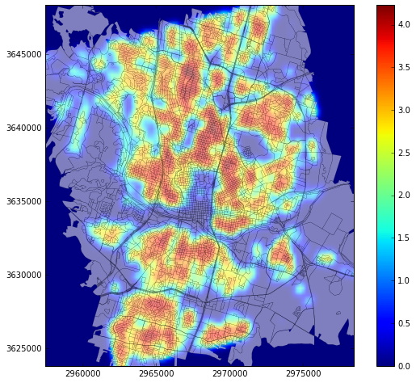
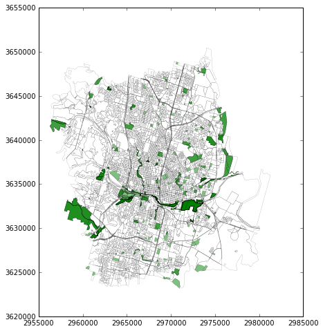
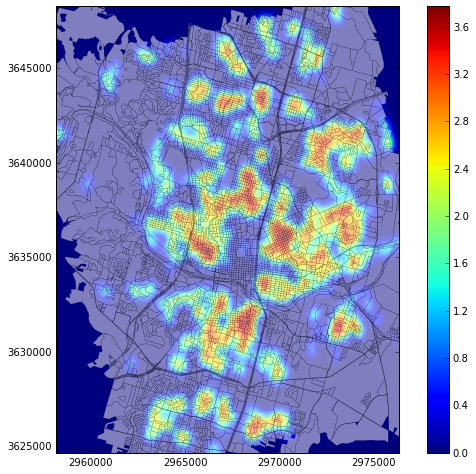

In this blog post, we discover spatial analysis using Geopandas. Geopandas is a powerful python library that can enable spatial analysis like the one that we know and love using commercial software or open source ones like QGIS. Geopandas has a similar functionality and it has the benefit of running through python that enables easy iterations and replication.
The data used in this blog post comes from the City of Austin where they provide free mapping data through their web interface or their API. The data that we downloaded referred to the building footprints, block-level population data and zoning data.
The first order of business was to load the shapefiles in python using Geopandas and convert the projection from a spherical form to a projected one for distance calculations. The projection chosen was the WGS84 14N. By using this projection we were able to calculate the area of each building and by multiplying it by the number of floors we could come up with an estimation of the overall square meters of the building. We used "spatial join" though the Geopandas functionality to connect the buildings with the zoning data and identify which buildings are considered residential or mixed use.
Next, we using "spatial join" once more to merge the buildings with the city blocks for population allocation. We used pandas to group the buildings in each block and find the percent of the total building area that they occupied. Based on the population of each block an equivalent amount of people was allocated to each building proportional to its total area. This enabled us to have an estimation of population per building. This was done considering only the residential or mixed use buildings identified before.
The map below shows the distribution of residential or mixed use buildings in the city of Austin, Texas. The red areas represent high building density and the blue areas low building density.
From the zoning data, we identified the areas that are marked as public and represent public features such as parks, squares, and green areas. The green areas are shown on the map below.
We wished to estimate the accessibility of those areas from the residential buildings. We applied a buffer of 300 m to the public areas and performed a spatial join to identify the residential buildings that fall within 300 m from a park. These buildings density map is shown on the map below and the population that has access to parks is about 39%.
